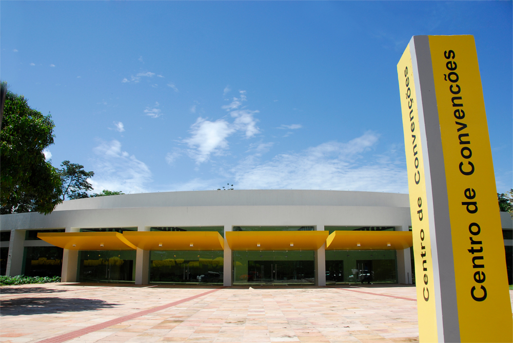

Sobre o evento
A primeira edição do Congresso Amazônico de Direito Internacional dos Direitos Humanos ocorrerá nos dias 2, 3 e 4 de outubro de 2017 em Belém do Pará.
A ideia de organizar um evento com a proposta de debater o deslocamento de pessoas adveio do interesse científico de jovens pesquisadores de várias instituições de ensino da cidade de Belém, que formam entre si o Grupo de Pesquisa em Direito Internacional dos Direitos Humanos da Liga Acadêmica Jurídica do Pará (LAJUPA). A Organização do Congresso ganhou o apoio de novos realizadores, quais sejam, o Grupo de Estudos em Direito Internacional (GDin) e o Centro Acadêmico de Direito Edson Luís (CADEL), ambos vinculados à Universidade Federal do Pará.
Assim, a convergência dos interesses de to dos os idealizadores do evento é no sentido de proporcionar à problemática do deslocamento de pessoas uma dimensão mais democrática e regional, ou seja, promover debates a partir da perspectiva amazônica, brasileira e latino - americana do deslocamento força do de seres humanos ao redor do globo.
É nesse sentido que o Congresso afirma seu ineditismo ao fornecer novos vieses teóricos à temática do deslocamento de pessoas por meio de contribuições intimamente regionais, sem, contudo, olvidar a análise da constr ução científica mundial sobre o assunto.
Conheça Belém
Inscrições e Submissões
Programação
* Programação sujeita a alterações pela organização do evento
Dia 02/10
9h - Credenciamento
10h-10h30 - Mesa de abertura
10h40-12h30 - Aula Magna
Almoço
14h - Credenciamento
15h-16h30 - Mesa 1 - O Migrante no Brasil: aspectos da legislação brasileira em imigração
16h30-17h - Coffee Break
17h-18h30 - Mesa 2 - Deslocamento de pessoas por motivações sociopolíticas e econômicas
Dia 03/10
8h - Credenciamento
9h-10h - Mesa 3 - Cidadania, deslocamento, refúgio e imigração na contemporaneidade
10h-10h30 - Coffee Break
10h30-12h - Mesa 4 - Território, Polulações Tradicionais e Grandes Projetos
Almoço
14h - Credenciamento
15h-16h30 - Mesa 5 - Deslocamento de pessoas, desenvolvimento e atividade corporativa
16h30-17h - Coffee Break
17h-18h30 - Mesa 6 - Conflitos Geopolíticos e deslocamento de pessoas: um olhar sobre as causas, as fronteiras do refúgio e as barreiras frente a xenofobia e o terrorismo
Dia 04/10
Apresentação de trabalhos e posters
Almoço
14h - Credenciamento
15h-16h30 - Mesa 7 - Os Direitos Humanos Internacionais e as crianças migrantes desacompanhadas
17h-18h30 - Mesa 8 - Sistemas Internacionais de DH em busca da proteção da pessoas em processo de deslocamento
18h-18h30Mesa de encerramento
18h30-19h30 - Coquetel de encerramento e concerto musical
Dúvidas? Entre em contato!
Para dúvidas relacionadas à submissão de trabalhos
academica.icadidh@gmail.comQuaisquer outras dúvidas acerca do evento
comunicacaoicadidh@gmail.comLocal
Centro de Eventos Benedito Nunes - UFPa
Belém - Pará - Brasil
